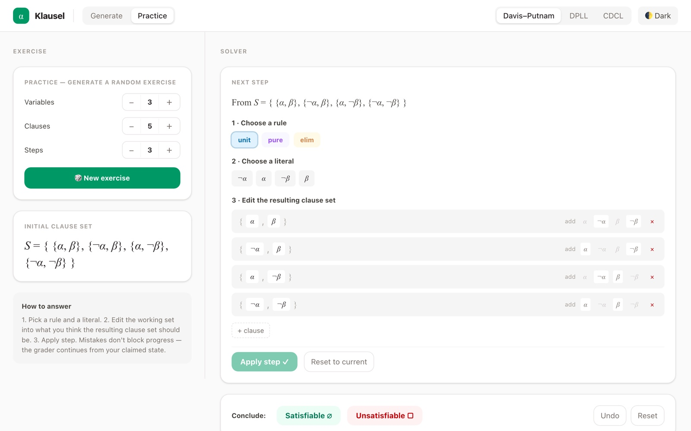

Learn SAT solving one step at a time
Klausel gives you as many Davis–Putnam, DPLL and CDCL exercises as you want, and checks every step you take. When you slip up, it tells you what went wrong and lets you carry on from your own answer.

What you can do with it
One app for the three classic SAT algorithms, built for students taking a logic or automated reasoning course and the teachers running it.
Practise without running out
Choose how many variables, clauses and steps you want, and Klausel makes a fresh exercise. Start small, then make them harder.
Feedback on every step
Pick a rule, apply it, and see straight away whether it was allowed and whether you applied it correctly. Mistakes don't stop you: you continue from what you wrote.
Design your own exercises
Sketch the steps you want a solution to take, and Klausel finds a formula that produces exactly those steps. Handy for tutorials and exams.
Download
Klausel is free and works offline once installed. Pick the version for your computer.
Mac
Apple chipM1, M2, M3 or newer Intel chipMost Macs from before 2021Not sure? Open the Apple menu and choose About This Mac. It says Chip for Apple, Processor for Intel.
Windows
StandardAlmost every Windows PC ARMSnapdragon laptops, Surface Pro XNot sure? Take Standard.
Linux
Intel or AMDUbuntu, Debian and similar ARMUbuntu, Debian and similarNot sure? Take Intel or AMD.
Opening Klausel the first time
Your computer will ask you once to confirm that you trust Klausel. After that it opens like any other app.
On a Mac
- Open the downloaded file and drag Klausel into the Applications folder.
- Open Klausel from Applications. macOS says it can't verify the app. Click Done.
- Open System Settings, go to Privacy & Security, scroll down and click Open Anyway next to the message about Klausel.
- Confirm with your password or Touch ID. Klausel opens, and from now on it opens normally.
If macOS instead says Klausel “is damaged”, open the Terminal app, paste xattr -cr /Applications/Klausel.app, press Return and open Klausel again.
On Windows
- Open the downloaded installer.
- If a blue window says Windows protected your PC, click More info and then Run anyway.
- Follow the installer. Afterwards you'll find Klausel in the Start menu.
On Linux
- Double-click the downloaded
.debfile to install it with your software centre. - Or, in a terminal in your Downloads folder, run
sudo apt install ./Klausel-linux-*.deb. - Start Klausel from your applications menu.
Why the warning? Klausel is a free university project, and getting rid of it would mean paying Apple and Microsoft for a developer certificate. The app is built automatically from its source code on GitHub, and nothing is changed by hand along the way.